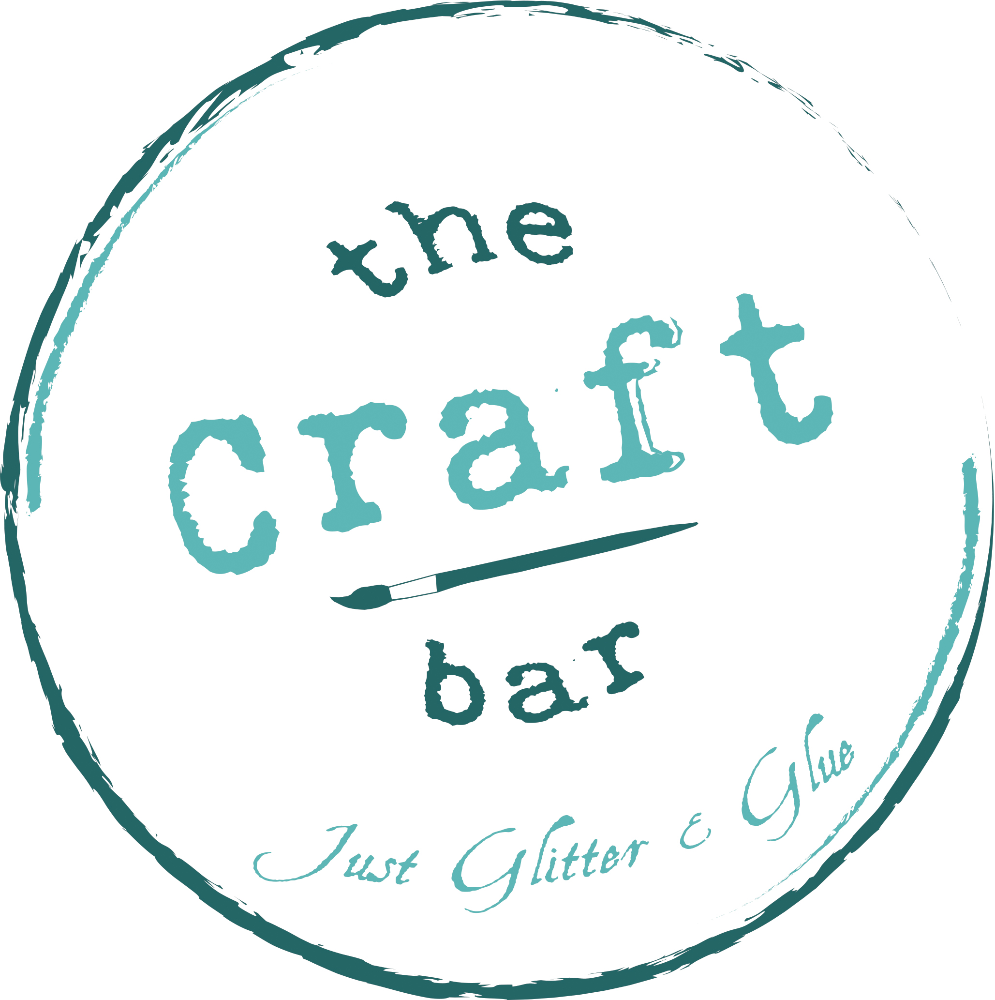

Downtown Pour is a website I helped design along with a team of 2 other web designers for downtown Orlando's upcoming event. My main role in the creation of this website was to create a fully functioning gallery page (found on the gallery page) to feature photos from the event. This website was developed fully through Wordpress.
Schiller Designs just recently got a face lift with a new direction, as you are currently viewing. Originally I designed Schiller Designs using Twitter Boostrap as a framework. I built this version to have a clean professional feel to it and of course I made sure that it was responsive across multiple devices. With the revamp of Schiller Designs I switched to Pure CSS as a framework in order to fulfill a more artistic vision with less limitations. You can check out the old website here.
I developed 3D models of an axe, treasure chest, goblet, and wishing well for use on a graphical engine like Unity or Unreal. These were modeled using Autodesk Maya to create the base models as well as creating the UV maps to be used later for texturing. The completed models with their respective UV maps were then exported into Substance painter for texturing. I completed this for a school project where the goal was to have finished models that could be later used in video game production.
The Craft Bar is a store that will be opening in downtown Sarasota in the near future. I had the pleasure of working with the two founders in order to create a logo that realizes and represents their vision to the community. The logo is just the beginning of The Craft Bar's journey as I am currently in the works building their website so stay tuned!
